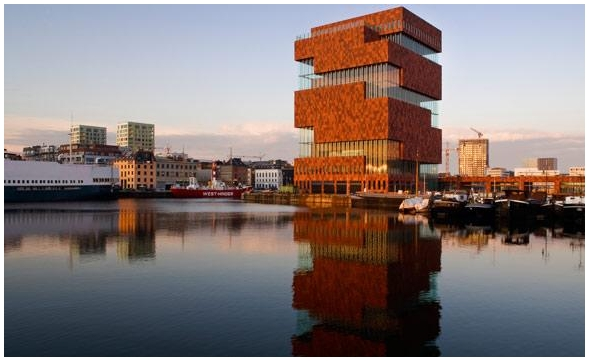

MAS - Museum aan de stroom
Hanzestedenplaats 1
2000 Antwerpen
Hanzestedenplaats 1
2000 Antwerpen
Het MAS is het grootste museum van Antwerpen en bevat architectuur van topniveau in een bruisend nieuw stadsdeel. Het is een verzameling van belevenissen en van sterke verhalen in een prikkelende omgeving. Het Mas is een open huis, je mag er zomaar in en uit lopen. Alleen de museumzalen zijn betalend. Antwerpen is een stad aan een stroom met een haven. Dat zorgt al eeuwen voor ontmoeting en uitwisseling. Het MAS verzamelt de sporen van die uitwisseling en vertelt er nieuwe verhalen mee. Over de stad, de stroom en de haven. Over de wereld in al zijn verscheidenheid. Over de verbondenheid van Antwerpen met de wereld.